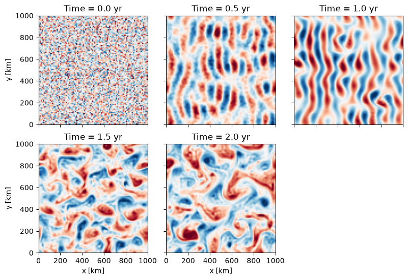
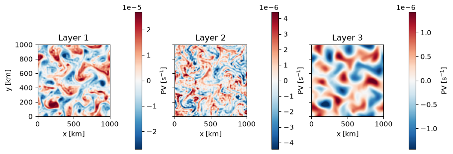

Layered Baroclinic Turbulence
This example runs the LayeredModel, a
quasi-geostrophic model with an arbitrary number of stacked layers. A
vertically sheared background flow is baroclinically unstable: the
available potential energy of the shear feeds a growing field of
eddies that equilibrate into geostrophic turbulence.
We use three layers here, but the same model handles any nz >= 2.
The PV inversion uses 64-bit precision regardless of the selected
Precision, so we enable JAX’s 64-bit support
before constructing the model.
import operator
import functools
import math
import matplotlib.pyplot as plt
import jax
jax.config.update("jax_enable_x64", True)
import jax.numpy as jnp
import pyqg_jax
Construct the Model
We set up three layers of increasing thickness and density over a 1000 km domain, with an eastward background flow that decreases with depth (a sheared jet). The layer densities set the buoyancy jumps and hence the deformation radii.
DT = 7200.0 # 2 hour time step
T_MAX = 2.5 * 365 * 86400.0 # 2.5 years
SNAP_INTERVAL = 0.5 * 365 * 86400.0 # snapshot every half year
stepped_model = pyqg_jax.steppers.SteppedModel(
pyqg_jax.layered_model.LayeredModel(
nx=96,
nz=3,
L=1000e3,
f=1e-4,
beta=1.5e-11,
rek=5.787e-7,
U=jnp.array([0.05, 0.025, 0.0]),
H=jnp.array([500.0, 1000.0, 2500.0]),
rho=jnp.array([1025.0, 1025.5, 1026.5]),
precision=pyqg_jax.state.Precision.DOUBLE,
),
pyqg_jax.steppers.AB3Stepper(dt=DT),
)
stepped_model
SteppedModel(
model=LayeredModel(
nx=96,
ny=96,
nz=3,
L=1000000.0,
W=1000000.0,
rek=5.787e-07,
filterfac=23.6,
f=0.0001,
g=9.81,
beta=1.5e-11,
rd=15000.0,
delta=0.25,
U=f64[3],
H=f64[3],
rho=f64[3],
precision=<Precision.DOUBLE: 2>,
),
stepper=AB3Stepper(dt=7200.0),
)
Configure Initial Condition
The default initial condition is small random noise in the potential vorticity of every layer. The unstable modes grow out of this noise.
init_state = stepped_model.create_initial_state(jax.random.key(0))
init_state
AB3State(
t=f32[],
tc=u32[],
state=PseudoSpectralState(qh=c128[3,96,49]),
)
Run the Model
We roll the state out to T_MAX, keeping a snapshot every
SNAP_INTERVAL. The rollout is JIT-compiled around
jax.lax.scan().
@functools.partial(jax.jit, static_argnames=["num_steps", "subsample"])
def roll_out_state(state, num_steps, subsample):
def loop_fn(carry, _x):
current_state = carry
next_state = stepped_model.step_model(current_state)
return next_state, current_state
_final_carry, traj_steps = jax.lax.scan(
loop_fn, state, None, length=num_steps
)
keep = jnp.arange(0, num_steps, subsample)
return jax.tree.map(lambda leaf: leaf[keep], traj_steps)
num_steps = math.ceil(T_MAX / DT)
snap_subsample = math.ceil(SNAP_INTERVAL / DT)
traj = roll_out_state(init_state, num_steps, snap_subsample)
Upper-Layer Potential Vorticity
The top layer evolves from noise, through growing baroclinic waves, into a field of coherent geostrophic eddies.
model = stepped_model.model
km = 1e-3
extent = (0, model.W * km, 0, model.L * km)
nframes = traj.tc.shape[0]
cols = 3
rows = math.ceil(nframes / cols)
fig, axs = plt.subplots(
rows,
cols,
layout="constrained",
figsize=(8, 2.7 * rows),
sharex=True,
sharey=True,
)
for step_i, ax in enumerate(axs.ravel()):
if step_i >= nframes:
fig.delaxes(ax)
continue
step = jax.tree.map(operator.itemgetter(step_i), traj)
q_top = step.state.q[0]
amp = float(jnp.percentile(jnp.abs(q_top), 99)) or 1.0
ax.imshow(
q_top,
vmin=-amp,
vmax=amp,
cmap="RdBu_r",
origin="lower",
extent=extent,
)
ax.set_title(f"Time = {step.t.item() / (86400 * 365):.1f} yr")
if step_i % cols == 0:
ax.set_ylabel("y [km]")
if step_i // cols == rows - 1:
ax.set_xlabel("x [km]")

Vertical Structure
What distinguishes the layered model from a single-layer model is its
vertical structure. Expanding the final state into a full state gives the potential vorticity
in every layer. The eddies are surface-intensified, with weaker,
larger-scale signatures at depth.
final_state = jax.tree.map(operator.itemgetter(-1), traj)
q_layers = final_state.state.q
fig, axs = plt.subplots(
1, model.nz, layout="constrained", figsize=(9, 3), sharey=True
)
for layer, ax in enumerate(axs):
amp = float(jnp.percentile(jnp.abs(q_layers[layer]), 99)) or 1.0
im = ax.imshow(
q_layers[layer],
vmin=-amp,
vmax=amp,
cmap="RdBu_r",
origin="lower",
extent=extent,
)
fig.colorbar(im, ax=ax, label="PV [s$^{-1}$]")
ax.set_title(f"Layer {layer + 1}")
ax.set_xlabel("x [km]")
axs[0].set_ylabel("y [km]")
Text(0, 0.5, 'y [km]')

The number of layers, the stratification (H and rho), and the
background shear (U) can all be varied. With a GPU this model scales
to higher resolution and many more layers.